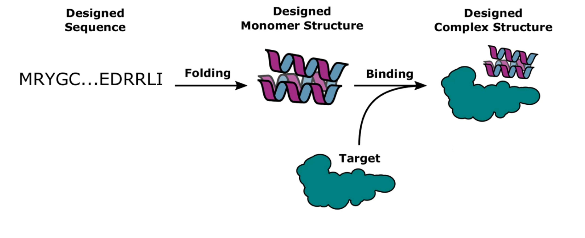

🚧 As I continue learning and refining my skills, this repository is a work in progress, so I am constantly adding updates and new projects! 🚀
1. 👶🏻🩺 Fetal Health Prediction During Childbirth
In this project, I explore the use of Supervised Classification Machine Learning Algorithms (Naive Bayes, Support Vector Machine and K-Nearest Neighbors) to predict the Fetal Health State during childbirth.
| Project Link |
Completion Date |
ML Algorithms |
Key Steps |
| 👶🏻🩺Fetal Health Classification |
Feb, 2025 |
- Naive Bayes
- Support Vector Machine (SVM)
- K-Nearest Neighbors (KNN) |
1. Exploratory Data Analysis (EDA): univariate and multivariate.
2. Outliers detection (IQR, Z-score) & Treatment.
3. Splitting the Dataset.
4. Feature scaling.
5. Coarse-to-Fine Hyperparameter Tuning Search.
6. Models Training.
7. Validation Report: ROC-AUC, Accuracy, F1-score, PR-AUC, etc. |
2. 🔬🧬 De novo Protein Design - Binder
Currently I am working on a project to design the binder of a protein using Deep Learning Diffusion Methods:
🚧🚧🚧 I expect to have the project ready by 📌 March 15th, 2025. 🚧🚧🚧
| Project Link |
Completion Date |
Software |
Key Steps |
| 🔬🧬 De novo Protein Design |
Mar, 2025 |
RosettaFold Diffusion, Protein MPNN, AlphaFold 3, Linux |
 |
> Image Source: Bennett, N. R. et al., & Baker, D. (2023). Improving de novo protein binder design with deep learning. Nature Communications, 14(1), 2625.
📌 Apr 2025: Design and implementation of infrastructure automation on AWS.
📌 May 2025: Development of a data ingestion and analysis application using Hadoop and Spark.